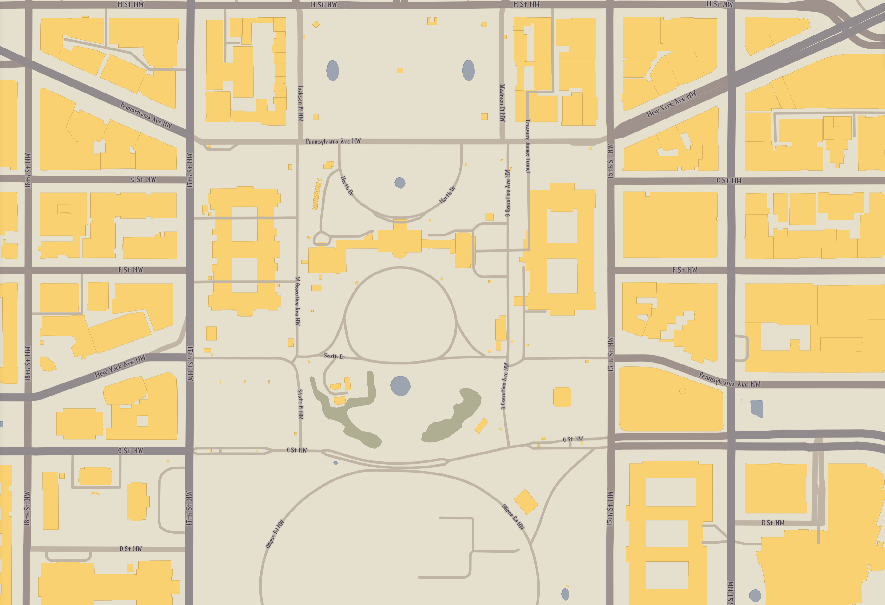
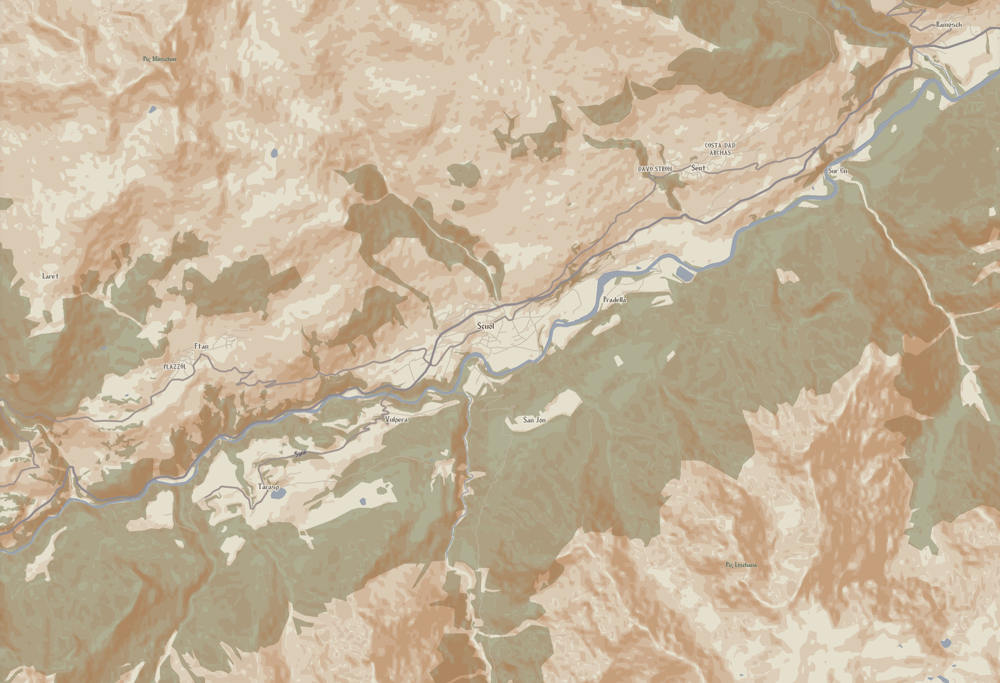
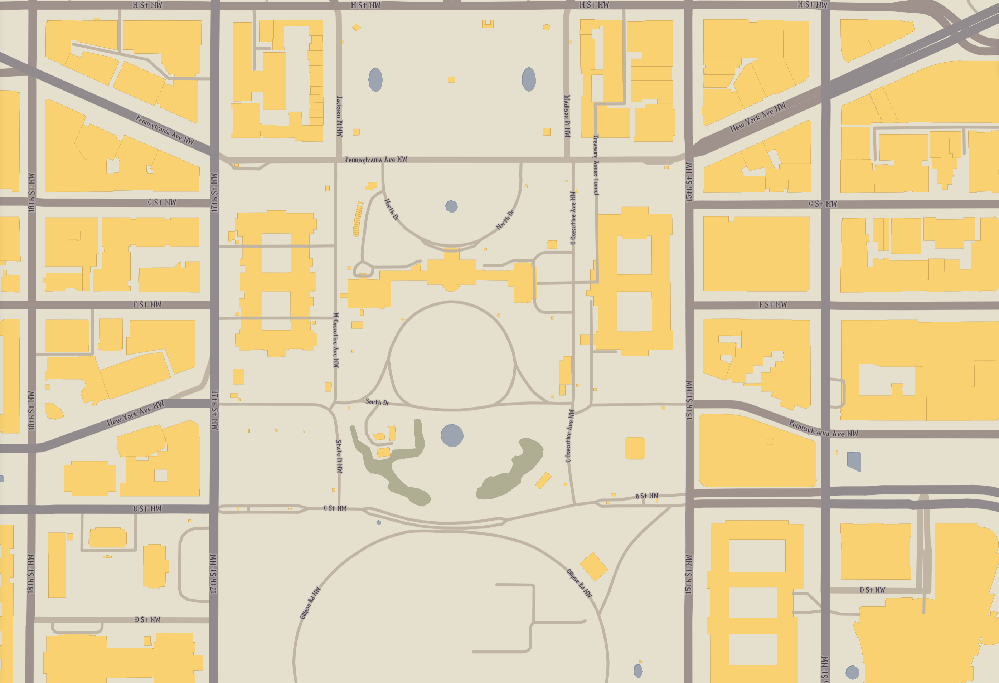
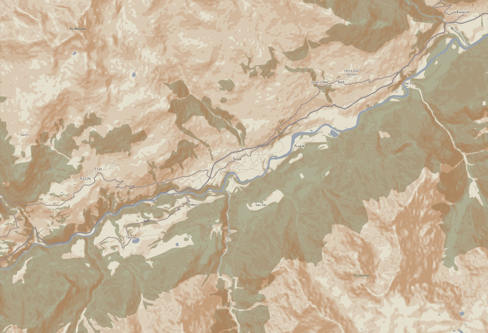

Pantokrator
A Cartographic Homage to the Byzantine Manuscript Tradition
"Pantokrator", a Greek term that literally translates as "All-Powerful", and more practically translates as "Almighty" (Especially in the Christian usage of the term), is inspired by the rich and vivid tradition of Medieval Roman, aka "Byzantine" illuminated manuscripts, especially of the 9th-11th Century "Macedonian Renaissance". Medieval Roman society was deeply religious, and viewed its ruler, the Emperor of the Romans, as God's Viceroy on Earth. It thus seems fitting (if a bit heterodox) to use it to name a map of global scale. The single most important rule of "Pantokrator" is that it may only use colors directly extracted from the pages of Byzantine-period manuscripts. No colors derived from modern dyes, pigments, or rooted in digital color schemes, may be used.
For the sake of consistency and variety, the lavishly-illustrated Paris Psalter, a creation of mid-10th century Constantinople (and almost certainly funded by the scholar-emperor, Constantine VII), was referenced. Its 14 hand-painted miniatures are honestly staggering achievements. The scribes accomplished an awe-inspiring variety of color, precision of strokes, and so successfully executed a classicized (meant to evoke Classical Roman art) style, that 19th-century scholars first thought that this work was almost 4 centuries older than it really was! Here, King David composes the Psalms, with Melodia, the personification of musical melody, often found in this period of Medieval Roman iconography. The color of the water in the map is drawn from the stream in the bottom left, and the green for the natural areas is drawn from the foliage at the top center.
Here, King David is shown with a psalter, held upen to Psalm 71, with Wisdom "Sophia" and Prophecy "Propheteia" standing beside him. The lavender shades of David's robe were used for the road colors, and the ostentatious gold illumination on this page was used to sample several different gold colors used in the map.
The painted images themselves are not the only sources of inspiration within the Psalter. The text itself offers a surprising array of options. The text within the map is inspired by the dark brown iron gall ink used in the main text body. Important text, as one can see, is emphasized with a bright red ink, based on dyer's madder. Even the aged vellum pages themselves provide a beige/off-white background color. More than that, the carefully-formatted Greek text is an explicit inspiration for the font used in the map itself, Dr. Juan-José Marcos' "Minuscule-XI". Compare the capital letters in this image with the letters seen in map screenshots!

 


